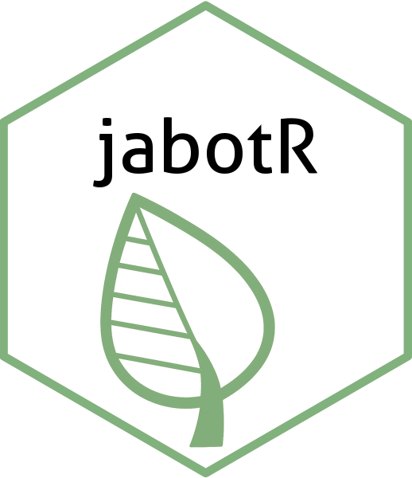

Caderno de campo · jabotR

Caderno de campo — Gerar planilhas de coleta
Organize os dados por evento de coleta. Cada evento reúne um cabeçalho compartilhado
e seus espécimes; ao final, gere a planilha no padrão Jabot.
1. Cabeçalho
Preencha data, localidade, coordenadas, habitat e coletores.
2. Espécimes
Adicione os espécimes ao evento de coleta correspondente.
3. Revisão
Abra “Detalhes” para conferir e completar a ficha de cada espécime.
4. Exportação
Gere a planilha Jabot ao concluir o preenchimento.